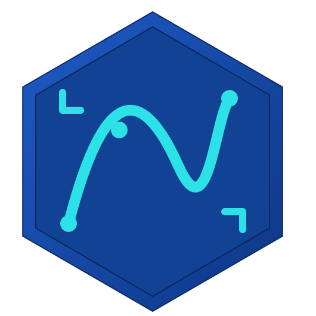

<!-- 
  Copyright (C) 2026 The QuickGesture of JavaScript
  Licensed under the Apache License, Version 2.0 (the "License");
  you may not use this file except in compliance with the License.
  You may obtain a copy of the License at

  http://www.apache.org/licenses/LICENSE-2.0

  Unless required by applicable law or agreed to in writing, software
  distributed under the License is distributed on an "AS IS" BASIS,
  WITHOUT WARRANTIES OR CONDITIONS OF ANY KIND, either express or implied.
  See the License for the specific language governing permissions and
  limitations under the License. 
-->

<!DOCTYPE html>
<html lang="en">
<head>
    <meta charset="UTF-8">
    <meta name="viewport" content="width=device-width, initial-scale=1.0, maximum-scale=1.0, user-scalable=no">
    <title>Quick Gesture</title>
    <style>
        #app{
            width: 100%;
            height: 100vh;
            margin: 0;
            padding: 0;
            box-sizing: border-box;
            background-color: black;
        }
        html {
            overscroll-behavior-y: contain;
        }
    </style>
    <link rel="stylesheet" href="../css/styles.css">
</head>
<body>
    <div id="app">
        
        <!-- phone -->
        <div id="drag-block">
            <div id="product">
                <div id="desktop">
                    <!-- <qs-grid id="desktop-app-grid" rows="7" gap="30px">
                
                    </qs-grid> -->
                </div>
                
                
                <div id="shade"></div>
                <div id="status-and-nav-view">
                    
                    <div id="top-status-bar">
                        <div id="front-camera"></div>
                        <span id="statusbar-time"></span>
                        <div id="statusbar-info"></div>
                    </div>
                    <div id="center-placeholder"></div>
                    <div id="bottom-nav-bar"></div>
                </div>
                <div id="set-page"></div>
            </div>
        </div>
    </div>
    <script src="../js/data.js"></script>
    <script src="../js/productConfig.js"></script>
    <script src="../js/settings.js"></script>
    <script src="../js/typeEnum.js"></script>
    <script src="../js/index.js"></script>
    <script src="../js/components.js"></script>
    <script>
        const app = document.getElementById('app');
        isShowStatusBar(true);
        // isShowShade(true);
        initInstalledApp(appList);
        openAppListener();
        checkSingleFingerSlideUpwardEvent(bottomNavBar, (e) => {
            // console.log('single finger slide upware');
            // alert('single finger slide upware');
        }, 0.1, true);
       
        setInterval(() => {setStatusBar()}, 1000);

        splitUpwardInBottomNav(runningAppList, bottomNavBar, true);

        gestureListener(statusBar, {
            slowSwipeDown: () => handleStatusBarSlideDown(),
            quickSwipeDown:  () => handleStatusBarSlideDown(),
            slowSwipeUp: () => handleStatusBarSlideUp(),
            quickSwipeUp: () => handleStatusBarSlideUp()
        });
        gestureListener(desktop, {
            slowSwipeLeft: () => {
                console.log('left');
                setDesktopPage('left');
            },
            slowSwipeRight: () => {
                console.log('right');
                setDesktopPage('right');
            },
            quickSwipeLeft: () => {
                console.log('quickSwipeLeft');
                setDesktopPage('left');
            },
            quickSwipeRight: () => {
                console.log('right');
                setDesktopPage('right');
            }
        });
        snackBar('welcome using Quick Gesture', '../packages/apps/MyApp/com/quickStepJs/myApp/res/ic_launcher.svg', product, 'snack-bar', 3000);
        setTimeout(() => {
            noticeBanner(`<div class="banner">
      
      <span>Welcome using Quick Gesture os</span>
    </div>`, product, 3000, historyInfo);
        }, 3000);
        setTimeout(() => {
            noticeBanner(`<div class="banner">
      
      <span>Quick Gesture is ready</span>
    </div>`, product, 3000, historyInfo);
        }, 4000);
    </script>
</body>
</html>
